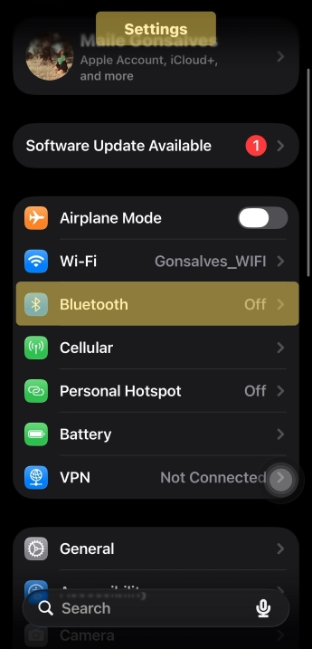
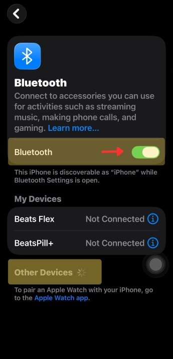
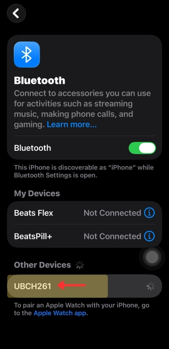
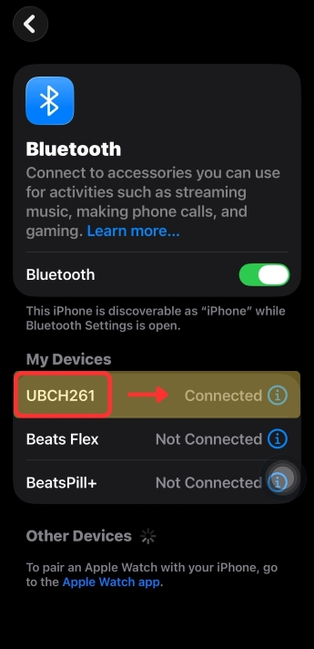

Using Bluetooth Mode (Audio Inputs)
Bluetooth mode allows for easy connectivity through your mobile/electronic device to stream music and use the hands-free calling features through the audio of an FM frequency on your car's radio.
After setting up the transmitter in your car, you can begin the process of connecting your mobile device to the FM transmitter using the default audio input, Bluetooth Mode.
-
Go to the Bluetooth settings on your mobile device.

-
Ensure Bluetooth is toggled on and wait for nearby or "other" devices to be
scanned by your mobile device.

-
Tip:Look for the transmitter's device name "UBCH261" and tap on the name to connectIf needed, use Password or Pin: 0000

The mobile device will show that the transmitter is connected and a sound prompt from
the transmitter will also notify that the Bluetooth connection is successful, and
you can begin streaming audio from your connected device
